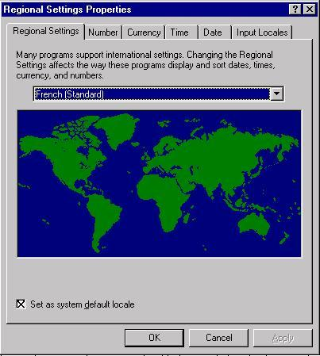
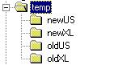
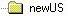
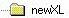
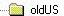
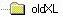

Netscape Translation Tools User's Guide
Contents
Disclaimer
DISCLAIMER OF WARRANTY. Free of charge Software is
provided on an "AS IS" basis, without warranty of any
kind, including without limitation the warranties that
the Software is free of defects, merchantable, fit for a
particular purpose or non-infringing. The entire risk as
to the quality and performance of the Software is borne
by you. Should the Software prove defective in any
respect, you and not Licensor or its suppliers assume the
entire cost of any service and repair. In addition, the
security mechanisms implemented by the Software have
inherent limitations, and you must determine that the
Software sufficiently meets your requirements. This
disclaimer of warranty constitutes an essential part of
this Agreement. No use of the Software without payment of
license fees to Licensor is authorized hereunder except
under this Disclaimer.
Introduction
The Netscape Translation Tools reduce the time required to localize a software
product by creating "localization databases" directly from an application's
user interface and by providing a user-friendly interface for working with
these databases. The databases are generated by the Netscape Leveraging
Tool (a.k.a. DogLev). DogLev can reuse previous translations of your software,
if available, further reducing localization costs. The Translation Tool
(a.k.a. ToolCool) allows you to work with the information from leveraged
databases, presenting a large amount of information about each localizable
resource, including the original English string, the localized string,
locking information, localization notes and any available leveraging information.
ToolCool saves localized resources directly to the application binaries;
there is no need to recompile a localized application using this method.
For this reason, we refer to this process as "no compile" or "binary" localization.
What is Binary Localization?
Binary localization refers to the process of translating, or localizing,
binary resource modules, as opposed to the text based source files that
generated them. What this means to you is that you will be using the tools
and instructions contained in the Windows Localization Kits to create translated
.dll and .exe files, without having to compile from source. There are many
benefits to this approach, as has already been mentioned, chief of which
is the ability to rely on databases to store and manipulate localization
data. Using these localization databases gives the localizer a much higher
degree of control and simpler ease of use than the traditional source file
localization efforts of the past.
The binary localization process starts by generating localization databases
from existing binary resource modules. Since this is also the time that
prior translations of earlier versions of the software can be applied to
the current version, we call this the "leveraging" step. Leveraging is
done with another tool developed at Netscape, the Netscape Leveraging Tool.
This tool creates the localization databases for the current project. If
a previously localized version of the product is available, the existing
translations are copied into the databases where possible; otherwise, the
databases contain all the US English strings of the current version.
Using ToolCool, translators work on all strings needing translation
or editing. Once the translation work is complete, ToolCool updates the
resource binary directly: there is no need to compile from source.
Understanding the Localization Databases
Each binary file to be localized has an associated localization database,
created by the Netscape Leveraging Tool. These files are in the dBASE®
(5.0 compatible) format. It is very important that you work properly with
these databases, as they contain the bulk of the localization notes and
instructions for this project. Most importantly, the database identifies
the "forbidden" resources - those you must not change.
Each database associated with a. dll or .exe has the same name as the
binary file, but will have the extension .DBF. The memo field component
of the database has the extension .DBT.
E.g. RESDLL.DLL has an associated RESDLL.DBF
and RESDLL.DBT
The structure of the database is as follows:
| Field |
Field Name |
Type |
Length |
Dec |
Index |
| 1 |
FILENAME |
CHARACTER |
20 |
N |
| 2 |
IDENTIFIER |
CHARACTER |
50 |
N |
| 3 |
US_STR |
MEMO |
10 |
N |
| 4 |
XL_STR |
MEMO |
10 |
N |
| 5 |
TRANSLATE |
CHARACTER |
20 |
N |
| 6 |
REASON |
CHARACTER |
100 |
N |
| 7 |
COMMENT |
MEMO |
10 |
N |
| 8 |
FILE |
CHARACTER |
20 |
N |
| 9 |
LOCCOMMENT |
MEMO |
10 |
N |
| 10 |
BINARY |
BINARY |
10 |
N |
Explanation of fields:
| Field Name |
Purpose |
| FILENAME |
Not used. |
| IDENTIFIER |
Resource ID. |
| US_STR |
Original English string. |
| XL_STR |
Target translated string. |
| COMMENT |
Localization notes for translator. |
| REASON |
Explanation of leveraging results. |
| TRANSLATE |
Resource is forbidden from translation if this is "FALSE" |
Resource IDs are made up of a combination of the resource type: either
STRINGTABLE, MENU, DIALOG or DATA and a numeric identifier assigned by
the compiler that built the binary file. You cannot change the contents
of this field.
The original English string shows what will be translated; however,
your translation must go in the XL_STR field. You cannot change the contents
of the US_STR field.
Your translation will be done in the XL_STR field. If there is no leveraged
translation from a prior version, this string will originally match the
US_STR value.
The TRANSLATE field dictates whether or not you can change the value
of the XL_STR field. If you export the database contents to a text format,
this field will contain either a blank value (Ok to translate) or the value
"FALSE" (do not translate). When viewed through the Netscape Translation
Tool (ToolCool), this field appears as a checkbox. When checked, you may
translate this resource; when unchecked, you may not.
The REASON field indicates the results of the leveraging
process which created the database.
If a resource requires some extra explanation, this can be found in
the COMMENT field.
Finally, special engineering related comments can be found in the LOCCOMMENT
field, which is only available through the text output from ToolCool or
directly via the database. This field is not currently used.
System Requirements
-
100% IBM compatible PC
-
Pentium(tm) processor preferred
-
Microsoft(R) Windows NT 3.51 or 4.0 (localized versions will help testing
but aren't required. However, see the note on Setting
the Default Locale below)
-
16 MB RAM
-
30 MB available hard disk space
Configuring the Netscape Translation Tool
It is recommended that you install ToolCool (ToolCool.exe)
to the kitRoot\l10nkits\client\windows\tools\dogTool
directory. Please refer to the Netscape Localization Kit documentation,
available from mozilla.org, for further
details on setting up your localization kit environment.
Configuring ODBC
The Translation tools use the ODBC drivers to access the localization
databases. These drivers are normally installed by the Netscape
Translation Tools installation program. It should not be necessary to do
any special configuration of However, if you receive an error message
when trying to open a database similar to the following:
"Data source name not found and no default driver specified"
you can manually configure ODBC by completing the following steps:
- Go to the Windows NT Control Panel
- Double click the ODBC icon
- Select the "User DSN" tab
- Add the dbase driver:
Configure the driver:
Setting the Default Locale
It is very important that you work with the translation databases only
with the correct locale set for your Windows session. To verify or change
your default locale, open the Start menu, then choose Settings |
Control Panel. Select the Regional Settings icon. This will display
a dialog similar to this one:

Use the drop down list to select the locale you desire. Make sure you
set this as your system default by checking the checkbox. You will need
your Windows NT CD-ROM and you must reboot in order for the default setting
to take effect.
Using the Netscape Translation Tool - ToolCool
There are two ways to perform localization using ToolCool:
-
work directly on the localization database (recommended)
-
work on exported text files generated by ToolCool
The first method is recommended, because the process of importing and exporting
localized text files to different file formats may introduce unknown errors;
working directly on the localization database is safer. In either case,
however, you MUST save your localization work to the application's resource
binaries using ToolCool's SAVE function. If you have localized text files
generated by ToolCool, you must import them back into the localization
database before saving them to the binary file.
Here is an overview of using ToolCool to localize your software. Note:
this overview assumes you have downloaded or created localization databases
for the product you wish to localize.
-
Choose a file to be localized.
-
Launch ToolCool.exe and select the database you want to work on:
-
Choose File | Open or press Ctrl-O or click
the open folder icon.
-
Be sure to choose the .DBF file that corresponds to the
resource binary you wish to translate.
-
If you wish to work directly in ToolCool, you may begin translating all
the new and/or changed resources. For first time (i.e. never before translated)
languages, all records will be marked as Exact Match in the REASON
field. For leveraged languages (i.e. those processed by DogLev, where a
previously localized version existed), these will be marked No Match,
ID ONLY or String Only.
-
If you wish to export the resources to text for importation into another
translation tool or program (e.g. Microsoft Word), choose Database
| Export and select the appropriate file type (Text or Tab Delimited)
and enter a target file name.
-
"Forbidden" resources: Remember, you
can only change resources that are not forbidden by the TRANSLATE field.
-
If you see a record where the TRANSLATE field is unchecked, you
may not change any part of that record. Doing so may "break" the product.
-
If you are working from a text file output, you must import your work prior
to updating the binary file:
-
Launch ToolCool.exe and select the database you have been working on.
-
Choose Database | Import, select the file type and the
file name.
-
Save your updates to the binary:
-
Choose File | Save, click the Save button or click the
disk icon; select the appropriate binary file (.exe or .dll).
Fixing Bugs Using ToolCool
When you fix any translation bugs, except for resizing dialogs, you MUST
fix the resource in the translation databases and use the Save to DLL feature
of ToolCool. This way, your translation database will always be up-to-date.
If you fix the bug directly in the binary, using MSDEV, for example, your
fix will not be reflected in the database and a regression (reappearance
of a previously fixed bug) may occur if you use the SAVE to DLL feature
of ToolCool again.
Using DogLev
DogLev is a resource "leveraging tool." Leveraging is the process
of moving translations from one version to the next. DogLev works
by comparing 3 versions of any given resource binary (.DLL or .EXE). DogLev
writes leveraged resource information to a 4th version (the new localized
target). It also creates a database that can be used by ToolCool
to do further translations. The graphic below represents leveraging from
German 4.x to German 5.0.
The Leveraging Process
When DogLev leverages a set of files, there are 4 basic results for any
resource the program knows how to deal with1.
These results are written to the REASON field of the translation database
for each file leveraged. These results are explained below.
The possible results are:
Exact Match - The New US and Old US strings matched exactly
in both resource ID and text. The previous translation (if any) has been
leveraged with 100% confidence; no retranslation is required (though you
might want to look at it just to be sure it was right the first time...).
Of course, if there was no previous translation available, you will need
to translate this resource now (but only if it is not "forbidden").
In the graphic above, there was no change to the stringtable entry for
"File", and the resource ID also did not change, so the previous translation
is carried forward and the record is marked as an Exact Match. (Note: all
of these examples are imaginary and do not necessarily apply to the real
product.)
No Match - This usually indicates a newly added resource. In
some cases, particularly when associated with menus or dialogs, it indicates
that the changes to the MENU or DIALOG resource are too great, throwing
off the leveraging2.
Resources marked as No Match will require retranslation, though you may
be able to reuse your previous translation without change.
In the graphic above, the string "New in 5.0" did not exist in 4.x,
so the English version is placed in the new German version and flagged
as No Match.
String Only - String Only results are usually associated with
MENU and DIALOG resources. A resource marked in this way indicates that
a new MENU or DIALOG item has been added but the leveraging tool was able
to preserve the previous translation by performing a string match. However,
it is possible that an error occurred here, so you should review carefully
any resources marked this way.
In the graphic above, the resource IDs have changed in the English product:
the Open menu used to be MENUITEM1, now it's MENUITEM3. DogLev was able
to find the original translation and move it to the new ID, but it flags
this record as a String Only match.
ID Only - Usually, you will see ID Only associated with STRINGTABLE
resources. A resource marked in this way indicates that the text of the
New US version now differs from the Old US version. Leveraging was only
accomplished by matching the resource IDs. If the XL_STR field still contains
a translation for this resource, it should be carefully checked to make
sure it is still valid.
In the graphic above, the English strings have changed (the pickletter
changed from &G to &O). DogLev knows this is a trivial change and
preserves the original translation, but flags the record as an ID Only
match.
Making It Work
There are two ways to use DogLev: through the GUI and via the command line
(DOS). In either case, you need to provide a target .DBF, and 4 instances
of a resource .DLL (or .EXE containing resources).
The 4 instances you will need are:
-
The new US version
-
The old US version
-
The new localized version (this will begin life as a copy of the new US
version)
-
The old localized version
Example: You want to go from localized 4.03 Greek to 4.05 Greek. Set up
your working environment so that you have 4 directories, each with a full
compliment of the files you want to localize. The simplest directory structure
would look like this:

(temp will be your language directory - Greek in this example.)
Place the following versions of the files you want to leverage into
the appropriate directories:
 4.05 32-bit US English version
 4.05 32-bit US English version
 4.03 32-bit English
version
 4.03 32-bit Greek version
Note: It is VERY important that the versions match properly.
If, for example, you used 4.03 to localize Greek, but used a 4.04 version
in oldUS, the leveraging results will have errors. oldUS must contain 4.03
in this example.
Please note: you MUST have your NT system locale set properly
or you may experience character corruption during leveraging. This is definitely
a risk for languages that don't use the DOS 437 or DOS 850 code pages.
Using the GUI
Start DogLev and create a new target database in your \newXL directory
by choosing File | New from the menu (or press the New File button). Once
that's done, you'll see the entry form. Point to the appropriate
copy of each file you want to leverage. For example, if you are leveraging
resdll.dll, your completed form would look something like this:
-
New US File = \newUS\resdll.dll
-
New Translated File = \newXL\resdll.dll
-
Old US File = \oldUS\resdll.dll
-
Old Translated File = \oldXL\resdll.dll
Click the "Build" button. Leveraging will take from several seconds
to several minutes, depending on the size of the file and the speed of
your computer.
Using the Command Line
You can automate this task, leveraging all the resource files at once,
by creating a batch file that looks like this:
DOGLEV "brpref32.dbf newUS\brpref32.dll brpref32.dll oldUS\brpref32.dll
oldXL\brpref32.dll"
DOGLEV "editor32.dbf newUS\editor32.dll editor32.dll oldUS\editor32.dll
oldXL\editor32.dll"
DOGLEV "edpref32.dbf newUS\edpref32.dll edpref32.dll oldUS\edpref32.dll
oldXL\edpref32.dll"
DOGLEV "mnpref32.dbf newUS\mnpref32.dll mnpref32.dll oldUS\mnpref32.dll
oldXL\mnpref32.dll"
DOGLEV "nsmailui.dbf newUS\nsmailui.dll nsmailui.dll oldUS\nsmailui.dll
oldXL\nsmailui.dll"
DOGLEV "nsnotify.dbf newUS\nsnotify.exe nsnotify.exe oldUS\nsnotify.exe
oldXL\nsnotify.exe"
DOGLEV "prefui32.dbf newUS\prefui32.dll prefui32.dll oldUS\prefui32.dll
oldXL\prefui32.dll"
DOGLEV "resdll.dbf newUS\resdll.dll resdll.dll oldUS\resdll.dll
oldXL\resdll.dll"
Please note the beginning and ending quotes, and the order in which
the arguments appear.
Notes
1. DogLev currently knows how to handle the following
resources:
-
STRINGTABLE
-
MENU
-
DIALOG
-
Javascript Preferences
<BACK>
2. Menus and dialogs don't have set ID values, as
do string tables. The leveraging tool relies on the ID to make it's matching
algorithm work with 100% certainty. Thus, if a menu or dialog control is
added to an existing, previously translated version, leveraging is often
not possible.
<BACK>
1998, Copyright Netscape
Communications Corp. All Rights Reserved